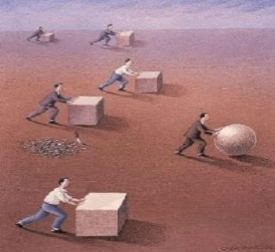
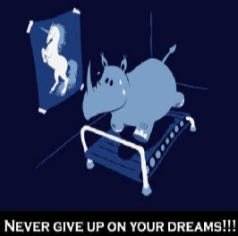
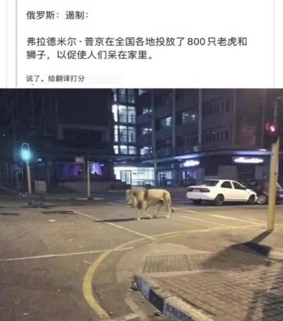

自由的思想、
独立的精神、
健全的人格。
甘地说：“没有良知而快乐，没有原则而从政，没有品格而博学，没有经过付出而富有，没有人性去研究科学，没有奉献却拥有信仰，没有道德而去经商，就是彻底毁灭我们的七件事情。”
高考命题选择有针对性的典型材料，加强情境设计，感染触动学生，结合学科特点，突出对理想信念等方面的考查和引导，激励考生树立正确的民族观、国家观、文化观、历史观，强化社会责任感。
绘事后素
习近平：“要在厚植爱国主义情怀上下功夫，让爱国主义精神在学生心中牢牢扎根，教育引导学生热爱护中国共产党，立志扎根人民、奉献国家。”
- 正确认识中国发展和世界融合的大势；
- 认清个人与时代发展、国家需要的关系；
- 中国的现代化进程与传统文化的继承；
- 青年应有远大的抱负和脚踏实地的精神。
命题内容范围
- 弘扬爱国主义精神
- 传承优秀传统文化
- 立足社会实际情景
- 关注生态文明建设
- 崇敬红色革命传统
- 渗透依法治国理念
教育部考试中心
高考命题选择有针对性的典型材料，加强情境设计，感染触动学生，结合学科特点，突出对理想信念等方面的考查和引导，激励考生树立正确的民族观、国家观、文化观、历史观，强化社会责任感。
一呈二增
一呈：呈现新成就、新成果
二增：文化自信 + 家国情怀
纵洒热血，功不必在我
同学们：
巴黎和会之事，想已尽知。
中国自清末以来，强寇遍野，国运衰微，外失国土，内丧主权。割香港于英，丧台湾于日，胶州湾强占于德，旅顺、大连横租于俄。和岸于内地，而外人领事；通铁路于西南，而他国操持。关口之税，矿脉之利，因之以赔款数亿，悉入贼手，瓜分之论，盛极一时。于是四方藩属，亦逢剧变：哈萨克、布鲁特等蚕食于俄，八达克山哲孟雄、缅甸等奴役于英，安南夷戮于法，琉球吞并于日。中国之不振已甚矣！洎武昌起义，逆虏一清，民国草创，宪政初兴。枭獍之徒各怀野心，交相啖食。山河破碎，黎庶疮痍，越七八年，以迄于今。国耻未雪，民瘼未苏，而段祺瑞政府，又欲割山东于日帝。此诚国家颠危之日，同学救亡之时也！
当此时也，冷眼旁观者有之，讥笑讽刺者有之。或日：“政府谋之，又何间焉？何必浪掷生命，思举大事？”
答日：“我大学生，是社会之良知也。国势疲茶，犹有再兴之望；良知泯灭，断无复明之时。而今四海震动，兆民流血，我辈岂能置诸事外，独完一身耶？况乃‘覆巢之下，安有完卵’？我诚能闭目塞听，偷安一时，然社稷既为丘墟，则国民皆为奴隶，他日更寻何所托身耶？故革命之事，虽理之所当然，亦时势之所不得不然也。”
或日：“青年学 生卤莽而空疏不涉实务。此时举事非但于国无益，反将扰乱时局，招祸于外。”
答日：“今日中国之破碎，其罪非在奋起抗争之人民，而在庸碌苟安之政府。六国赂秦，七庙尽隳；北宋臣虏，二宗俱狩。今列强之略，更有过于昔日之秦与金者。夫帝国主义，豺狼也，贪嗜膻腥而恶流血。傥割肉相与，则其势愈盛，吾力愈亏，安能不为其所制哉？故当此大难，诚宜鼓噪民意，抖擞精神，使天下一心，共谋兴复。奈何前清外媚，唯图一夕之安；军阀自利，竞起四方之众。当是四方交攻，生灵涂炭之时，倡此论者，又在何处耶？国家之日丧，即此等专主实务之人所致。吾曹今日举事，正为外争国权，内惩国贼，发扬民主，恢复宪政。使才能之士有以尽为国家所用，令国家主权不复拱手相让于豺狼也。”
或日：“势单力薄，必不至于成功。”
答日：“昔者拳民兴师， 联军折戟；天国作难，清廷震惶。此二者，皆困穷之众而无恒心之民也。焉得饱学之人，忠志之士，戮力同心，反不能成事乎哉？况吾道不孤，一切智慧先进之士，皆吾之师长也；一切刚毅坚贞之士，皆吾之亲友也；一切被侮辱损害之人民，皆吾之兄弟也。然则我数千年之中华，数万万之同胞，岂有久处绝境，全无出路之理耶？”
幸吾辈革命，振起沉绵，感激忠烈。夫如是，则中国幸甚，人民幸甚，纵洒热血，其功必不唐捐矣。
1919 年 5 月 4 日
语文备考策略
广泛阅读时政新闻，
了解时代脉搏，
倾听时代声音；
深刻领会时代精神，
解读时政内涵，
树立鲜明立场；
研读优秀时评文章，
学习观点方法，
多元解读时事。
思辨
（一）

在寻梦的路上，每个人都背负着一些东西，他们沉重得甚至拖慢你前进的脚步，那么，你会选择无论多么困苦都要推着它们一起走，还是选择割舍掉一部分让自已轻装上阵，超越他人？
当众人都推着沉重的立方体巨石前进时，你却将它削成了省力的球体，的确，这一路你会轻松很多。但如果到了下坡的地方，这些巨石的沉重则会成为衡量你生命价值的砝码！
思辨性解读
应该割舍
不应该割舍
如果你割舍掉的是亲情、友情，甚至是道义和责任，那么你将成为那个滚下山坡的孱头；但如果你割舍掉的是功名利禄、权势地位这些俗世的羁绊，那你就会成为那个最旷达释然的采菊人。
（二）

思辨性解读
理想与现实
脚踏实地
本我与超我
超越自我
梦想再大也不算大，
追梦的人再小也不算小
多元分析、逆向思维、跳跃式思维、假设推断法、溯因推断法、归谬法、条件推断法、类比推断法、批判性思维……
新课标 思维品质
语文学科核心素养是学生在积极的语言实践活动中积累与构建起来，并在真实的语言运用情境中表现出来的语言能力及其品质；是学生在语文学习中获得的语言知识与语言能力，思维方法与思维品质，情感、态度与价值观的综合体现。
直觉思维、形象思维、逻辑思维、辩证思维和创造思维的发展，以及深刻性、敏捷性、灵活性、批判性和独创性等思维品质。
发展逻辑思维，能够辨识、分析、比较、归纳和概括；运用基本的语言规律和逻辑规律，判别语言运用的正误；
运用批判性思维审视语言文字作品，研究和发现语言现象和文学形象。
思维发展与提升
学习任务群旨在引导学生发展实证、推理、批判与发现的能力，增强思维的逻辑性和深刻性，认清事物的本质，辨别是非、善恶、美丑，提高理性思维水平。
- 发展实证、推理、批判与发现的能力；
- 增强科学性和深刻性；
- 认清事物的本质，辨别事非、善恶、美丑，提高理性思维水平；
- 阅读近期重要的时事评论，学习作者评说国内外大事或热点问题的立场、观点、方法。
思辨性：
对立统一型
发展变化型
批判性思维
2017 全国卷 I
据近期一项对来华留学生的调查，他们较为关注的“中国关键词”有：一带一路、大熊猫、广场舞、中华美食、长城、共享单车、京剧、空气污染、美丽乡村、食品安全、高铁、移动支付。
请从中选择两三个关键词来呈现你所认识的中国，写一篇文章帮助外国青年读懂中国。要求选好关键词，使之形成有机的关联；选好角度，明确文体，自拟标题；不要套作，不得抄袭；不少于 800 字。
思辨解读：
大——小：国家战略（大）——民众生活（小）
远——近：传统文化（远）——现代化进程（近）
生态环保（近）、科技金融（近）、创新发展（近）
褒——贬：社会、政治、经济、生态、科技、文化
空气污染、食品安全、广场舞
辨证逻辑：自我解剖，自我反省，谦虛低调、有理有节、不卑不亢、责任担当。
高考阅卷：大——小；高——低
高谈阔论、高屋建瓴、高瞻远瞩，细处着眼、微观呈现、以小见大。
2019 全国卷 I
“民生在勤，勤则不匮”，劳动是财富的源泉，也是幸福的源泉。“夙兴夜寐，洒扫庭内”，热爱劳动是中华民族的优秀传统，绵延至今。可是现实生活中，也有一些同学不理解劳动，不愿意劳动。有的说：“我们学习这么忙，劳动太占时间了！”有的说：“科技进步这么快，劳动的事，以后可以交给人工智能啊！”也有的说：“劳动这么苦，这么累，干吗非得自己干？花点钱让别人去做好了！”此外，我们身边也还有着一些不尊重劳动的现象。
请结合材料内容，面向本校（统称“复兴中学”）同学写一篇演讲稿，倡议大家“热爱劳动，从我做起”，体现你的认识与思考，并提出希望与建议。要求：自拟标题，自选角度，确定立意；不要套作，不得抄袭；不得泄露个人信息；不少于 800 字。
解读：
- “民生在勤，勤则不匮”。劳动和传统的关系是什么？
- 劳动与幸福，劳动与财富的关系是什么？
- “可是”说明了什么问题？——传统与现实出现了矛盾。
- 劳动和学习的关系是什么？
- 劳动与科技发展的关系是什么？
- 劳动与金钱的关系是什么？
思辨性解读：
中华民族的劳动传统与现代生活成了一对矛盾对立体；
倡导劳动精神与现代生活的相互统一（精神、意志、品格）；
坚守劳动精神就是坚守中华民族伟大复兴之路上的那颗初心。
作文写作策略
对立统一型
- 准确判定二元或多元矛盾对立体；
- 推断对立体之间相互思辨关系；
- 挖掘其象征的相关社会文化含义。
2020 全国卷 I (预测)
材料一
2020 年 3 月，一场新冠肺炎疫情打乱了 3 月应有的节奏。疫情发生后，习近平总书记从一开始就明确下达指令：人民的生命高于一切！所有防控措施都首先考虑尽最大努力防止更多群众被感染，尽最大可能挽救更多患者生命，提高收治率和治愈率、降低感染率和病亡率。
由此，武汉果断封城、十四亿人居家隔离、30000 名医护人员驰援武汉、基建狂魔十日建成“火神山”、各类捐赠不计其数……
材料二
英国宣布停止对轻症患者进行检测，英国首相鲍里斯表示，让英国民众做好失去亲人的准备，未来几个月新冠肺炎将会在英国整个国家传播，因为英国的目标不是控制疫情，而且让更多的人获得免疫。轻症患者自我隔离 7 天；不关闭学校；不禁止观众前往大型体育活动；机场不做健康检查；鼓励大家多洗手。
材料三
当被问及是否担心疫情向首都华盛顿蔓延时，特朗普表示，“不，我一点都不担心。我们做得很好。”特朗普 3 月 9 日在社交媒体推特上发表了他的表态：“去年有 3.7 万美国人死于流感，每年平均有 2.7 万到 7 万人因此死亡。”但是，“生活和经济还在继续，现在新冠病毒确诊感染者只有 546 人。”
材料四
俄罗斯街头

阅读以上材料，根据要求写一篇不少于 800 字的文章。要求选择一个角度构思作文，自主确定立意，确定文体，确定标题；不要脱离材料内容及含义范围作文，不要套作，不得抄袭。
思辨解读：
- 真正的人道
- 轻慢与担当
- 傲慢的代价